Full Component Preview
Favourite Lists lets a chef save webshop products into named lists and order from them later. The heart on a product tile in the webshop catalog saves the product to Default list and opens the Favourite Lists panel, where the chef moves it between lists or creates a new one. Go to Shopping List opens that list in My Favourites → Order Lists. Both pages read and write one shared store, so they always show the same lists.
- Heart a productCatalog tile heart. Signed out, Sign in opens first (context
favourite). - Saved to Default listThe Favourite Lists panel opens with Default list ticked.
- Pick or create listsRows toggle the product in and out of each list; Create new list adds one and puts the product in it.
- Go to Shopping ListOpens
template-profile-favourites.html#order-lists/{listId}: Order Lists, that list open.
Anatomy
Two surfaces on one store. The panel (#fav-list-panel, content .ufs-favlist) sits on the v1 .signin-panel drawer shell in the webshop catalog. Order Lists is the existing v1 "My Lists" design in My Favourites (.pg-fav-sublist-*), now rendered from the store, plus three new states (.ufs-ol-*).
| Part | Element | Spec |
|---|---|---|
| Shell | .signin-panel#fav-list-panel | v1 drawer: 420px, full height, slides in from the inline-end edge; role="dialog", aria-modal="true", labelled by the title |
| Title | .signin-panel-title | "Product added to list!" (H5, H5 mobile size ≤768px), 20px below |
| List row | .ufs-favlist__row | Toggle button (aria-pressed): list name (body, 500) + 24px heart, outline (not in list) or filled --color-accessible-orange (in list). 16px padding, 1px mushroom-300 border (mushroom-500 on hover), --radius-md, 12px gap between rows. A new row fades in (.is-new). |
| Create new list | .ufs-favlist__create | Same box, centred "+ Create new list" in body-sm, --color-accessible-orange |
| Create form | .ufs-favlist__form | v1 Form field (max 40 characters) + 48px square primary button with a plus icon (disabled until there's a name); error line below in body-xs --color-error |
| Status | .ufs-favlist__status | Visually hidden role="status": "Added to …", "Removed from …", "Created … and added the product to it" |
| Footer | #fav-list-ft | Two equal buttons, 16px gap: Continue Shopping (primary, closes) + Go to Shopping List (secondary, a link). While the form is open: a single Cancel (#fav-list-ft-create). |
| Part | Element | Spec |
|---|---|---|
| Tab | #panel-products | The "Order Lists" sub-tab (desktop) / accordion section (mobile) of My Favourites (v1 Account layout) |
| Meta row | .pg-fav-sec-meta | Count ("10 products" / "4 lists") + All / Lists toggle + Sort (Most recent, A–Z). v1. |
| All | #ol-all-grid | v1 Product Tiles, every product in any list once, newest first; the heart is filled and removes |
| List card | .pg-fav-sublist-card | v1: name, "Created on {date}", "{n} products · {total}", up to 4 thumbnails (+n), View list. Whole card is a button. |
| List detail | .pg-fav-sublist-detail | v1: "My lists" back link, name (H5, an h3), count, Order all bar ("{n} products at qty 1 each · {total} total" + Order all), the list's tiles |
| Empty card | .ufs-ol-card-empty | New "No products yet" in a dashed mushroom-100 box, in place of the thumbnails |
| Empty view / list | .ufs-ol-empty | New Title (body, 600) + text (body-sm, mushroom-900) + Browse products (secondary small, to the catalog). Dashed mushroom-300 border, mushroom-100. |
| Toast | .x-toast-stack | New here The webshop toast (see Pack Size Picker spec): "Removed from …" + Undo |
<!-- ================================================================ FAVOURITE LISTS PANEL — see FAVOURITE LISTS in the script. Rows are rendered by favRenderLists(); the footer swaps between Continue shopping / Go to Shopping List and a single Cancel while the create-list form is open. Go to Shopping List is a link to My Favourites → Order Lists → the list (favLink(), set on render). ================================================================ --> <div class="signin-backdrop" id="fav-list-backdrop" onclick="closeFavListPanel()"></div> <div class="signin-panel" id="fav-list-panel" role="dialog" aria-modal="true" aria-labelledby="fav-list-title"> <div class="signin-panel-hd"> <img src="../images/ufs-logo.png" alt="UFS" class="signin-panel-logo"/> <button class="signin-close" onclick="closeFavListPanel()" aria-label="Close"> <svg viewBox="0 0 12 12" fill="none" stroke="currentColor" stroke-width="2" stroke-linecap="round"><line x1="2" y1="2" x2="10" y2="10"/><line x1="10" y1="2" x2="2" y2="10"/></svg> </button> </div> <div class="signin-panel-body"> <h2 class="signin-panel-title" id="fav-list-title">Product added to list!</h2> <span class="ufs-favlist__status" id="fav-list-status" role="status"></span> <div class="ufs-favlist"> <div class="ufs-favlist" id="fav-list-rows"></div> <button type="button" class="ufs-favlist__create" id="fav-list-create" onclick="favShowCreate(true)"> <svg viewBox="0 0 16 16" aria-hidden="true"><path fill-rule="evenodd" clip-rule="evenodd" fill="currentColor" d="M8 3.36C8.25037 3.36 8.47704 3.46148 8.64111 3.62556C8.80519 3.78963 8.90667 4.0163 8.90667 4.26667V7.36H12C12.2504 7.36 12.477 7.46148 12.6411 7.62556C12.8052 7.78963 12.9067 8.0163 12.9067 8.26667C12.9067 8.51704 12.8052 8.7437 12.6411 8.90778C12.477 9.07185 12.2504 9.17333 12 9.17333H8.90667V12.2667C8.90667 12.517 8.80519 12.7437 8.64111 12.9078C8.47704 13.0719 8.25037 13.1733 8 13.1733C7.74963 13.1733 7.52296 13.0719 7.35889 12.9078C7.19482 12.7437 7.09333 12.517 7.09333 12.2667V9.17333H4C3.74963 9.17333 3.52296 9.07185 3.35889 8.90778C3.19482 8.7437 3.09333 8.51704 3.09333 8.26667C3.09333 8.0163 3.19482 7.78963 3.35889 7.62556C3.52296 7.46148 3.74963 7.36 4 7.36H7.09333V4.26667C7.09333 4.0163 7.19482 3.78963 7.35889 3.62556C7.52296 3.46148 7.74963 3.36 8 3.36Z"/></svg> Create new list </button> <form class="ufs-favlist__form" id="fav-list-form" hidden onsubmit="favCreateList(event)" novalidate> <div class="ufs-favlist__form-row"> <input type="text" class="fi-field" id="fav-list-name" placeholder="List name" aria-label="New list name" maxlength="40" autocomplete="off" aria-describedby="fav-list-error" oninput="favNameInput()"/> <button type="submit" class="btn btn-primary ufs-favlist__add" id="fav-list-add" aria-label="Create list" disabled> <svg viewBox="0 0 24 24" aria-hidden="true"><path fill-rule="evenodd" clip-rule="evenodd" fill="currentColor" d="M12 5.04C12.3756 5.04 12.7156 5.19222 12.9617 5.43833C13.2078 5.68445 13.36 6.02445 13.36 6.4V11.04H18C18.3756 11.04 18.7156 11.1922 18.9617 11.4383C19.2078 11.6844 19.36 12.0244 19.36 12.4C19.36 12.7756 19.2078 13.1156 18.9617 13.3617C18.7156 13.6078 18.3756 13.76 18 13.76H13.36V18.4C13.36 18.7756 13.2078 19.1156 12.9617 19.3617C12.7156 19.6078 12.3756 19.76 12 19.76C11.6244 19.76 11.2844 19.6078 11.0383 19.3617C10.7922 19.1156 10.64 18.7756 10.64 18.4V13.76H6C5.62445 13.76 5.28445 13.6078 5.03834 13.3617C4.79222 13.1156 4.64 12.7756 4.64 12.4C4.64 12.0244 4.79222 11.6844 5.03834 11.4383C5.28445 11.1922 5.62445 11.04 6 11.04H10.64V6.4C10.64 6.02445 10.7922 5.68445 11.0383 5.43833C11.2844 5.19222 11.6244 5.04 12 5.04Z"/></svg> </button> </div> <p class="ufs-favlist__error" id="fav-list-error" aria-live="polite"></p> </form> </div> </div> <div class="signin-panel-ft" id="fav-list-ft"> <button type="button" class="btn btn-primary" onclick="closeFavListPanel()">Continue Shopping</button> <a class="btn btn-secondary" id="fav-list-go" href="template-profile-favourites.html#order-lists">Go to Shopping List</a> </div> <div class="signin-panel-ft" id="fav-list-ft-create" hidden> <button type="button" class="btn btn-secondary" onclick="favShowCreate(false)">Cancel</button> </div> </div> <div class="pg-fav-sec-body"> <!-- Order Lists — rendered by olRender() from the shared lists store (see ORDER LISTS in the script). Deep link: #order-lists[/listId] --> <div id="products-view-all"> <div class="pg-fav-sec-meta"> <div class="pg-fav-sec-meta-left"> <span class="pg-fav-sec-count" id="ol-count-products">0 products</span> <div class="pg-fav-view-toggle" role="tablist" aria-label="View"> <button class="pg-fav-view-toggle-btn is-active" role="tab" aria-selected="true" data-view="all" onclick="setFavView('products','all')">All</button> <button class="pg-fav-view-toggle-btn" role="tab" aria-selected="false" data-view="lists" onclick="setFavView('products','lists')">Lists</button> </div> </div> <div class="pg-fav-sort-wrap"> <button class="pg-fav-sort-btn" aria-label="Sort options" aria-expanded="false"><svg width="13" height="13" viewBox="0 0 24 24" fill="none" stroke="currentColor" stroke-width="2" stroke-linecap="round" stroke-linejoin="round" aria-hidden="true"><line x1="3" y1="6" x2="21" y2="6"/><line x1="3" y1="12" x2="15" y2="12"/><line x1="3" y1="18" x2="9" y2="18"/></svg>Sort</button> <div class="pg-fav-sort-panel" hidden> <button class="pg-fav-sort-option pg-fav-sort-active" data-sort="date">Most recent<svg class="pg-fav-sort-check" width="13" height="13" viewBox="0 0 24 24" fill="none" stroke="currentColor" stroke-width="2.5" stroke-linecap="round" stroke-linejoin="round" aria-hidden="true"><polyline points="20 6 9 17 4 12"/></svg></button> <button class="pg-fav-sort-option" data-sort="alpha">A–Z<svg class="pg-fav-sort-check" width="13" height="13" viewBox="0 0 24 24" fill="none" stroke="currentColor" stroke-width="2.5" stroke-linecap="round" stroke-linejoin="round" aria-hidden="true"><polyline points="20 6 9 17 4 12"/></svg></button> </div> </div> </div> <div class="pg-content-tiles ufs-catalog-grid" id="ol-all-grid"></div> <div class="ufs-ol-empty" id="ol-all-empty" hidden> <p class="ufs-ol-empty__title">No products in your lists yet</p> <p class="ufs-ol-empty__text">Tap the heart on any product to save it to a list.</p> <a class="btn btn-secondary btn-sm" href="template-products-catalog-webshop.html">Browse products</a> </div> </div> <div id="products-view-lists" hidden> <div id="products-sublists-grid"> <div class="pg-fav-sec-meta"> <div class="pg-fav-sec-meta-left"> <span class="pg-fav-sec-count" id="ol-count-lists">0 lists</span> <div class="pg-fav-view-toggle" role="tablist" aria-label="View"> <button class="pg-fav-view-toggle-btn" role="tab" aria-selected="false" data-view="all" onclick="setFavView('products','all')">All</button> <button class="pg-fav-view-toggle-btn is-active" role="tab" aria-selected="true" data-view="lists" onclick="setFavView('products','lists')">Lists</button> </div> </div> <div class="pg-fav-sort-wrap"> <button class="pg-fav-sort-btn" aria-label="Sort options" aria-expanded="false"><svg width="13" height="13" viewBox="0 0 24 24" fill="none" stroke="currentColor" stroke-width="2" stroke-linecap="round" stroke-linejoin="round" aria-hidden="true"><line x1="3" y1="6" x2="21" y2="6"/><line x1="3" y1="12" x2="15" y2="12"/><line x1="3" y1="18" x2="9" y2="18"/></svg>Sort</button> <div class="pg-fav-sort-panel" hidden> <button class="pg-fav-sort-option pg-fav-sort-active" data-sort="date">Most recent<svg class="pg-fav-sort-check" width="13" height="13" viewBox="0 0 24 24" fill="none" stroke="currentColor" stroke-width="2.5" stroke-linecap="round" stroke-linejoin="round" aria-hidden="true"><polyline points="20 6 9 17 4 12"/></svg></button> <button class="pg-fav-sort-option" data-sort="alpha">A–Z<svg class="pg-fav-sort-check" width="13" height="13" viewBox="0 0 24 24" fill="none" stroke="currentColor" stroke-width="2.5" stroke-linecap="round" stroke-linejoin="round" aria-hidden="true"><polyline points="20 6 9 17 4 12"/></svg></button> </div> </div> </div> <div class="pg-fav-sublist-grid" id="ol-lists-grid"></div> </div> <div id="ol-details"></div> </div> </div>
/* ================================================================ FAVOURITE LISTS PANEL — opened from a product tile's heart once signed in. Figma "Rosana 2.0" 4152:5454 (added to Default list), 4153:5523 (create new list), 4153:5634 (new list created). Same .signin-panel shell as the other side panels; rows are toggles (heart filled = product is in that list). ================================================================ */ #fav-list-panel .signin-panel-title { margin-bottom: var(--space-5); } .ufs-favlist { display: flex; flex-direction: column; gap: var(--space-3); } .ufs-favlist__row, .ufs-favlist__create { width: 100%; display: flex; align-items: center; justify-content: space-between; gap: var(--space-3); padding: var(--space-4); border: 1px solid var(--color-mushroom-300); border-radius: var(--radius-md); background: var(--color-salt); cursor: pointer; font-family: var(--font-family); text-align: start; transition: border-color 0.15s, background 0.15s; } .ufs-favlist__row:hover, .ufs-favlist__create:hover { border-color: var(--color-mushroom-500); } .ufs-favlist__row:focus-visible, .ufs-favlist__create:focus-visible { outline: 2px solid var(--color-accessible-orange); outline-offset: 2px; } .ufs-favlist__name { font-size: var(--text-body-size); line-height: var(--text-body-lh); font-weight: 500; color: var(--color-brand-dark); min-width: 0; overflow-wrap: anywhere; } .ufs-favlist__heart { width: 24px; height: 24px; flex-shrink: 0; } .ufs-favlist__heart path { fill: none; stroke: var(--color-accessible-orange); stroke-width: 1.5; transition: fill 0.15s; } .ufs-favlist__row[aria-pressed="true"] .ufs-favlist__heart path { fill: var(--color-accessible-orange); stroke: none; } .ufs-favlist__row.is-new { animation: tps-reveal 0.3s ease both; } .ufs-favlist__create { justify-content: center; gap: var(--space-1); font-size: var(--text-body-sm-size); line-height: var(--text-body-sm-lh); color: var(--color-accessible-orange); } .ufs-favlist__create svg { width: 16px; height: 16px; } .ufs-favlist__form[hidden], .ufs-favlist__create[hidden] { display: none; } .ufs-favlist__form-row { display: flex; gap: var(--space-3); } .ufs-favlist__form .fi-field { flex: 1; min-width: 0; background: var(--color-salt); } /* .btn.* — beats the DS .btn padding, which is declared later in this file */ .btn.ufs-favlist__add { width: var(--space-12); height: var(--space-12); padding: 0; flex-shrink: 0; } .ufs-favlist__add svg { width: 24px; height: 24px; } .ufs-favlist__add:disabled { opacity: 0.4; cursor: not-allowed; } .ufs-favlist__error { margin-top: var(--space-1); font-size: var(--text-body-xs-size); line-height: var(--text-body-xs-lh); color: var(--color-error); } .ufs-favlist__error:empty { display: none; } .ufs-favlist__status { position: absolute; width: 1px; height: 1px; overflow: hidden; clip-path: inset(50%); white-space: nowrap; } #fav-list-panel .signin-panel-ft[hidden] { display: none; } /* Figma footer: 16px gap, two equal buttons — tighter side padding so "Go to Shopping List" fits the 420px panel */ #fav-list-panel .signin-panel-ft { gap: var(--space-4); } #fav-list-panel .signin-panel-ft .btn { min-width: 0; padding: 0 var(--space-3); } @media (max-width: 768px) { #fav-list-panel .signin-panel-title { font-size: var(--text-h5-mob-size); } .ufs-favlist__name { font-size: var(--text-body-sm-size); } } /* ================================================================ ORDER LISTS (v3) — states the shared lists store adds to the v1 "My Lists" cards + detail (.pg-fav-sublist-*): empty list, no products yet, and the Undo toast after removing with the heart. ================================================================ */ .pg-fav-sublist-detail-name:focus { outline: none; } .pg-fav-sublist-detail-name:focus-visible { outline: 2px solid var(--color-accessible-orange); outline-offset: 2px; border-radius: 2px; } [dir="rtl"] .pg-fav-sublist-back-btn svg { transform: scaleX(-1); } /* the back arrow points to the start side */ .pg-fav-sublist-card:focus-visible { outline: 2px solid var(--color-accessible-orange); outline-offset: 2px; } /* Card without products: same height as a row of thumbnails */ .ufs-ol-card-empty { display: flex; align-items: center; justify-content: center; min-height: 64px; border: 1px dashed var(--color-mushroom-300); border-radius: var(--radius-sm); background: var(--color-mushroom-100); font-size: var(--text-body-xs-size); line-height: var(--text-body-xs-lh); color: var(--color-mushroom-900); } /* Empty view / empty list */ .ufs-ol-empty { display: flex; flex-direction: column; align-items: center; gap: var(--space-2); text-align: center; padding: var(--space-10) var(--space-6); border: 1px dashed var(--color-mushroom-300); border-radius: var(--radius-sm); background: var(--color-mushroom-100); } .ufs-ol-empty[hidden] { display: none; } .ufs-ol-empty__title { font-size: var(--text-body-size); line-height: var(--text-body-lh); font-weight: 600; color: var(--color-brand-dark); } .ufs-ol-empty__text { font-size: var(--text-body-sm-size); line-height: var(--text-body-sm-lh); color: var(--color-mushroom-900); margin-bottom: var(--space-2); } .pg-content-tiles[hidden] { display: none; } /* Toast (same as the webshop toasts: brand-dark, max 2, newest at the bottom) */ .x-toast-stack { position: fixed; left: 50%; bottom: 24px; transform: translateX(-50%); z-index: 960; display: flex; flex-direction: column; align-items: center; gap: var(--space-2); width: max-content; max-width: calc(100vw - 32px); pointer-events: none; } .x-toast-item { pointer-events: auto; background: var(--color-brand-dark); color: #fff; border-radius: var(--radius-sm); padding: 12px 16px; font-size: var(--text-body-sm-size); box-shadow: var(--shadow-lg); display: flex; align-items: center; gap: 12px; max-width: 100%; } .x-toast-item button { border: none; background: none; color: var(--color-brand-primary); font-weight: 700; cursor: pointer; text-decoration: underline; font-size: var(--text-body-sm-size); font-family: var(--font-family); white-space: nowrap; } @media (max-width: 1024px) { .x-toast-stack { bottom: calc(var(--bottom-nav-h) + env(safe-area-inset-bottom, 0px) + var(--space-3)); } } @media (max-width: 768px) { .x-toast-stack { left: var(--space-4); right: var(--space-4); transform: none; width: auto; max-width: none; align-items: stretch; } .x-toast-item { justify-content: space-between; } .ufs-ol-empty { padding: var(--space-8) var(--space-4); } }
Favourite Lists Panel
Opened by the heart on a catalog tile when the product isn't in any list yet. The product is already in Default list when the panel appears; every row tap saves straight away, so there is no Save button.
| Field | Copy |
|---|---|
| Title | Sign up or Log in to save products to your lists. |
| Description | Join over 1 million chefs already getting inspired. |
| Success | Tap the heart to save products — your lists will be waiting in your profile. |
Order Lists
The v1 My Favourites → Order Lists design, now showing the chef's real lists. Cards, detail and tiles are unchanged from v1; the empty states and the toast are new. Prices use the webshop format (€, 2 decimals).
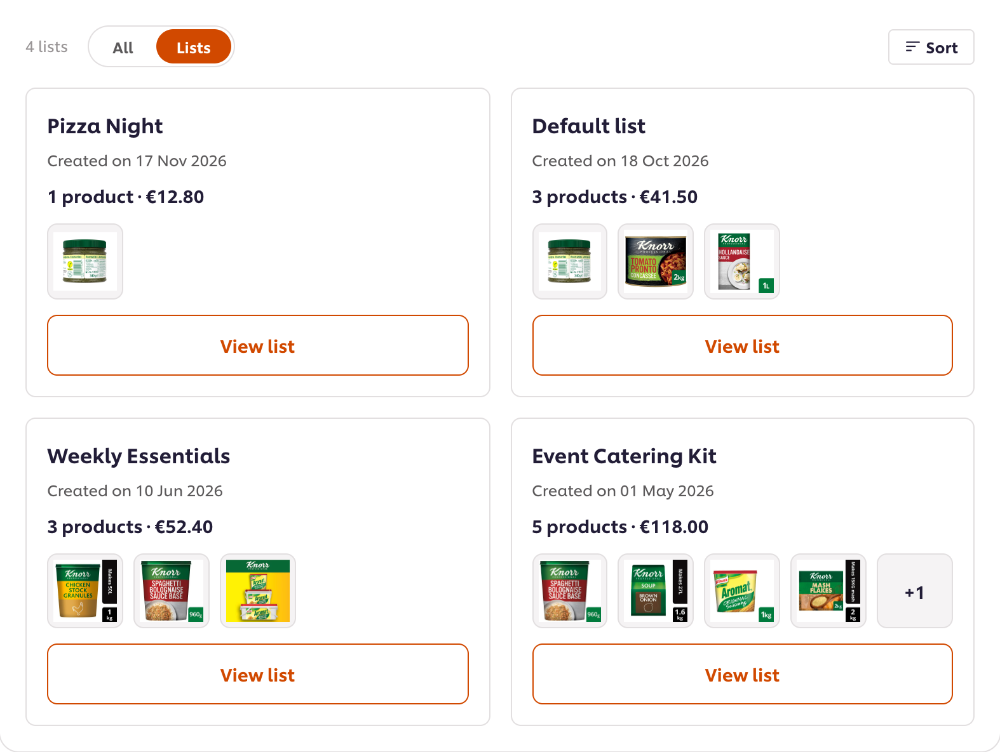
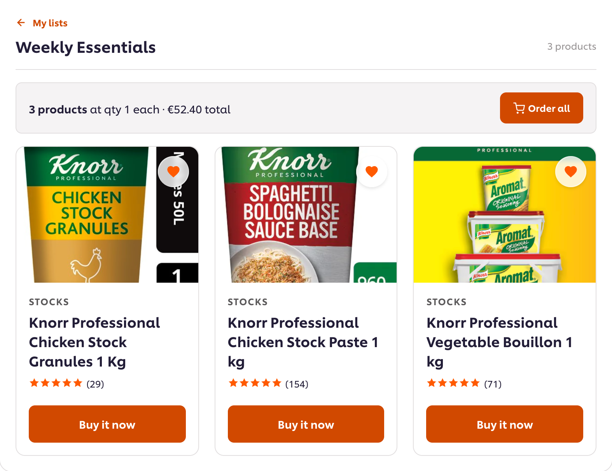
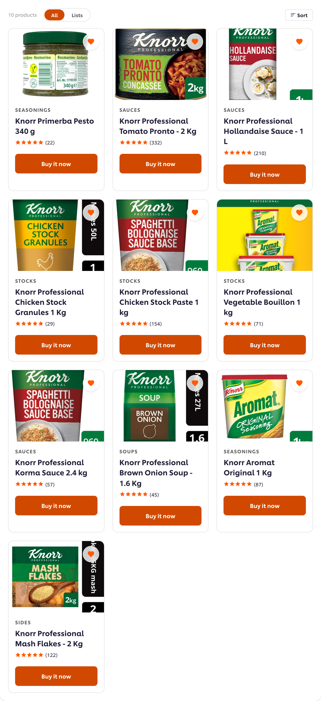
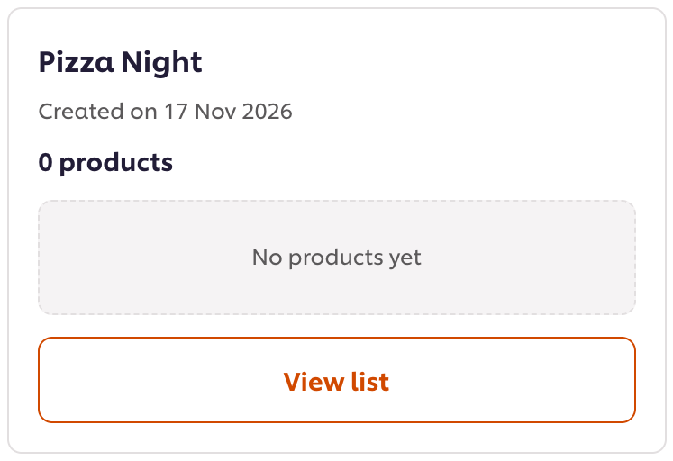
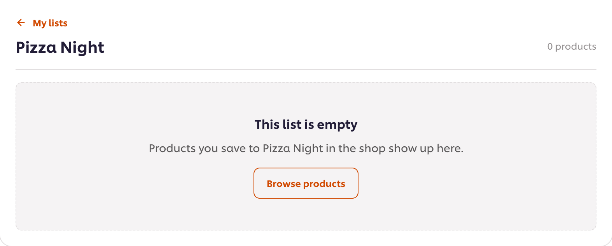
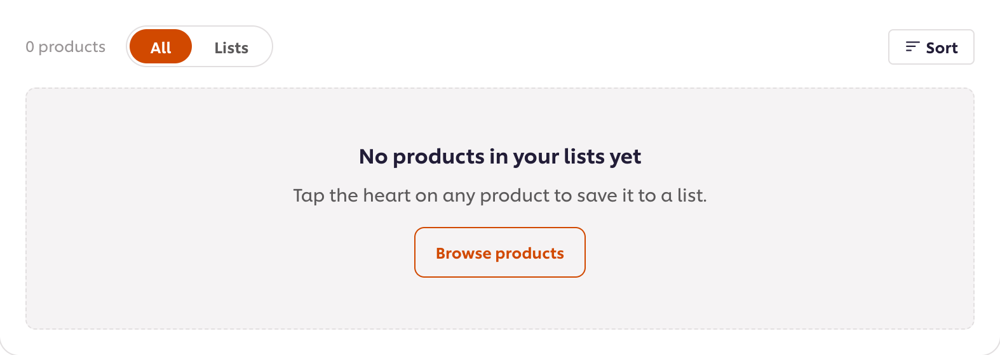
Shared Store & Deep Link
Both templates load the same store.js. In production the lists belong to the chef's account (API); the prototype keeps them in localStorage so the two pages share them.
| Field | Spec |
|---|---|
| Key | localStorage["ufs-webshop-lists"], JSON, v: 1 (the webshop cart uses ufs-webshop-cart the same way) |
lists | [{ id, name, created, items: [{ id, at }] }]. Array order = panel order (Default list first, new lists at the end). created is ISO; at is when the product was added (ms). |
products | Snapshot per product id: name, category, image, price, rating, written when the product is saved, so Order Lists renders without the catalog. Unused snapshots are dropped on save. |
| Default list | id default; always there. Lists can't be renamed or deleted yet (not designed). |
| Names | Trimmed, max 40 characters, unique (case-insensitive): "You already have a list with this name" |
| First visit | Seeded with Default list (2 products) + the v1 demo lists Weekly Essentials (3) and Event Catering Kit (5), so both pages start from the same data |
| Storage blocked | Private mode / blocked storage: the store lives in memory for the page; nothing breaks |
| Another tab | A storage event reloads the store: catalog hearts and the open panel, or Order Lists, update |
| URL | Opens |
|---|---|
template-profile-favourites.html#order-lists/{listId} | My Favourites, Order Lists tab (mobile: accordion section open, scrolled under the sticky header), Lists view, that list |
…#order-lists | Order Lists, Lists view (also when the list id no longer exists; the hash is corrected) |
| Which list | The list the product was last added to in the panel: Default list on open, a row turned on, or a new list. Turning that list off falls back to the newest list the product is still in; no list → #order-lists. |
| Staying in sync | Opening a list, going back to My lists, or switching to All updates the hash (history.replaceState), so reload and shared links land on the same view |
/* ================================================================ FAVOURITE LISTS STORE — one store for the webshop catalog (the heart + Favourite Lists panel) and My Favourites → Order Lists. Both pages read and write localStorage 'ufs-webshop-lists', so a list created or a product hearted in the catalog is in Order Lists, and a product removed there is no longer hearted in the catalog. Storage can be blocked (private mode) or switched off (FAV_STORE_MEMORY = true, the spec page): the store then lives in memory for the page. Shape (v: 1): lists: [{ id, name, created (ISO), items: [{ id, at (ms) }] }] panel order = array order; Default list is always first products: { productId: { name, cat, img, price, rating } } a snapshot, so Order Lists can render without the catalog last: id of the list the product was last added to (panel) ================================================================ */ var FAV_STORE_KEY = 'ufs-webshop-lists'; var FAV_DEFAULT_ID = 'default'; var FAV_SEED_PRODUCTS = { granules: { name: 'Knorr Professional Tomato Pronto - 2 Kg', cat: 'Sauces', img: 'catalog/knorr/tomato-pronto-2kg.jpg', price: 18.90, rating: 332 }, demiglace: { name: 'Knorr Professional Mash Flakes - 2 Kg', cat: 'Sides', img: 'catalog/knorr/mash-flakes-2kg.jpg', price: 24.90, rating: 122 }, mayo: { name: 'Knorr Aromat Original 1 Kg', cat: 'Seasonings', img: 'catalog/knorr/aromat-original-1kg.jpg', price: 32.40, rating: 87 }, garlic: { name: 'Knorr Professional Brown Onion Soup - 1.6 Kg', cat: 'Soups', img: 'catalog/knorr/brown-onion-soup-1-6kg.jpg', price: 12.30, rating: 45 }, roux: { name: 'Knorr Professional Chicken Stock Granules 1 Kg', cat: 'Stocks', img: 'catalog/knorr/chicken-stock-granules-1kg.jpg', price: 15.60, rating: 29 }, tomato: { name: 'Knorr Professional Hollandaise Sauce - 1 L', cat: 'Sauces', img: 'catalog/knorr/hollandaise-sauce-1l.jpg', price: 9.80, rating: 210 }, chicken: { name: 'Knorr Professional Chicken Stock Paste 1 kg', cat: 'Stocks', img: 'tiles/packshot.webp', price: 22.60, rating: 154 }, veg: { name: 'Knorr Professional Vegetable Bouillon 1 kg', cat: 'Stocks', img: 'product-detail/product-hero/product-2.png', price: 14.20, rating: 71 }, curry: { name: 'Knorr Professional Korma Sauce 2.4 kg', cat: 'Sauces', img: 'tiles/packshot.webp', price: 29.50, rating: 57 } }; // First visit only: Default list + the two lists from the v1 Order Lists design function favSeed() { var now = Date.now(), day = 864e5; function items(ids, from) { return ids.map(function (id, i) { return { id: id, at: from + i * 60000 }; }); } return { v: 1, lists: [ { id: FAV_DEFAULT_ID, name: 'Default list', created: new Date(now - 30 * day).toISOString(), items: items(['tomato', 'granules'], now - 2 * day) }, { id: 'weekly-essentials', name: 'Weekly Essentials', created: '2026-06-10T09:00:00.000Z', items: items(['veg', 'chicken', 'roux'], Date.parse('2026-06-10T09:00:00Z')) }, { id: 'event-catering-kit', name: 'Event Catering Kit', created: '2026-05-01T09:00:00.000Z', items: items(['granules', 'demiglace', 'mayo', 'garlic', 'curry'], Date.parse('2026-05-01T09:00:00Z')) } ], products: JSON.parse(JSON.stringify(FAV_SEED_PRODUCTS)), last: FAV_DEFAULT_ID }; } function favStoreRead() { if (window.FAV_STORE_MEMORY) return null; try { var v = JSON.parse(localStorage.getItem(FAV_STORE_KEY)); return v && v.v === 1 && v.lists && v.lists.length ? v : null; } catch (e) { return null; } } var favStore = favStoreRead() || favSeed(); function favStoreSave() { // Drop snapshots no list uses any more var used = {}; favStore.lists.forEach(function (l) { l.items.forEach(function (it) { used[it.id] = 1; }); }); Object.keys(favStore.products).forEach(function (id) { if (!used[id]) delete favStore.products[id]; }); if (window.FAV_STORE_MEMORY) return; try { localStorage.setItem(FAV_STORE_KEY, JSON.stringify(favStore)); } catch (e) {} } favStoreSave(); // first visit: write the seed, so both pages start from the same lists // Another tab (e.g. the catalog next to Order Lists) changed the lists window.addEventListener('storage', function (e) { if (e.key !== FAV_STORE_KEY) return; favStore = favStoreRead() || favSeed(); if (typeof favOnStoreChange === 'function') favOnStoreChange(); }); function favList(id) { return favStore.lists.filter(function (l) { return l.id === id; })[0] || null; } function favHas(list, pid) { return list.items.some(function (it) { return it.id === pid; }); } // Ids of the lists a product is in, in panel order function favListsOf(pid) { return favStore.lists.filter(function (l) { return favHas(l, pid); }).map(function (l) { return l.id; }); } function favAddTo(listId, pid, snapshot) { var l = favList(listId); if (!l || favHas(l, pid)) return; if (snapshot) favStore.products[pid] = snapshot; l.items.push({ id: pid, at: Date.now() }); favStore.last = listId; } function favRemoveFrom(listId, pid) { var l = favList(listId); if (l) l.items = l.items.filter(function (it) { return it.id !== pid; }); } // Where a product sits in every list, so Undo puts it back exactly function favTake(pid, onlyListId) { var taken = []; favStore.lists.forEach(function (l) { if (onlyListId && l.id !== onlyListId) return; l.items.forEach(function (it, i) { if (it.id === pid) taken.push({ list: l.id, index: i, item: it }); }); }); taken.forEach(function (t) { favRemoveFrom(t.list, pid); }); return { pid: pid, product: favStore.products[pid], taken: taken }; } function favPutBack(snap) { if (snap.product) favStore.products[snap.pid] = snap.product; snap.taken.forEach(function (t) { var l = favList(t.list); if (l && !favHas(l, snap.pid)) l.items.splice(Math.min(t.index, l.items.length), 0, t.item); }); } function favNameTaken(name) { return favStore.lists.some(function (l) { return l.name.toLowerCase() === name.toLowerCase(); }); } function favCreate(name) { var id = 'list-' + Date.now().toString(36); favStore.lists.push({ id: id, name: name, created: new Date().toISOString(), items: [] }); return id; } // Order Lists deep link: the list, or the Lists overview when there's none var FAV_PAGE = 'template-profile-favourites.html'; function favLink(listId) { return FAV_PAGE + '#order-lists' + (listId && favList(listId) ? '/' + listId : ''); } function favMoney(n) { return '€' + n.toFixed(2); } // same format as the catalog
Using the Lists
What happens at each step, on both pages.
| Moment | What happens |
|---|---|
| Heart, signed out | Sign in opens with the "favourite" copy. After signing in, the product is added to Default list and the panel opens. |
| Heart, not in a list | Added to Default list (heart pops, see Animation) and the panel opens. |
| Heart, in a list | Removed from every list at once (no panel); toast "Removed from your lists" + Undo puts it back in the same lists and positions. |
| Panel row | Toggles the product in / out of that list; the heart follows; the status line announces it. Go to Shopping List now points at that list. |
| Create new list | The button turns into the form; focus moves to the field; the footer becomes Cancel. Add (or Enter) creates the list at the end of the panel, puts the product in it and closes the form. |
| Continue Shopping / × / backdrop / Esc | Closes the panel. The product stays in its lists. |
| Go to Shopping List | A link: opens Order Lists on that list (same tab). |
| Order Lists: list card | Opens the list; focus moves to the list name. My lists goes back and focuses that card. |
| Order Lists: heart | In a list: removes from that list. In All: removes from every list. Toast + Undo; focus moves to the next heart (or the list name when the list is now empty). |
| Order Lists: Sort | Most recent (lists by created date, products by date added) or A–Z; kept when the view re-renders |
| Order all / Buy it now | Unchanged v1 buttons, no action in the prototype (see Overview). An empty list shows its empty state instead of the Order all bar. |
| The feature uses | From the page |
|---|---|
byId(id), PRODUCTS | Catalog product data for the snapshot |
favs, favBtn(), toggleTileFav() | The catalog's tile heart (v1 Tile; favs is seeded from the store) |
S.auth, openSignIn(), REG_CONTEXT_COPY, regCompletePendingFavourite() | v1 Sign in flow |
toastAction(msg, label, fn) | Webshop toast in the catalog; Order Lists has its own copy (olToast) |
setFavPanel, setFavView, openFavSublist, closeFavSublist | v1 My Favourites tabs, toggle and drill-down (wrapped to keep the hash and focus) |
/* ================================================================ FAVOURITE LISTS — product tile hearts on this page. Signed out: the heart opens Sign In ('favourite' context); once signed in the product goes into Default list and the lists panel opens. Signed in: an inactive heart adds to Default list + opens the panel; an active heart removes the product from every list straight away and shows a toast with Undo (no panel). Lists live in the shared store above (v3): they're the lists in My Favourites → Order Lists, and "Go to Shopping List" opens the list the product was last added to there. ================================================================ */ // Product wording for the shared sign-in block's 'favourite' context // (its default copy talks about recipes) REG_CONTEXT_COPY.favourite = { title: 'Sign up or Log in to save products to your lists.', desc: 'Join over 1 million chefs already getting inspired.', success: 'Tap the heart to save products — your lists will be waiting in your profile.' }; var FAV_HEART_PATH = 'M8.3791 3.6C9.60313 3.60007 10.7701 4.0008 11.7336 4.74062L11.923 4.89297L12.0031 4.96328L12.0822 4.89492C12.9523 4.16561 14.0086 3.7266 15.132 3.62832L15.3742 3.6127L15.6174 3.60781C17.1105 3.60781 18.5128 4.20128 19.5676 5.27969C20.6201 6.35594 21.2003 7.78851 21.2004 9.31094C21.1967 10.7454 20.6784 12.1019 19.7355 13.1537L19.5646 13.3363L13.1154 19.9311C12.8248 20.2282 12.4197 20.3998 12.007 20.3998C11.6368 20.3998 11.2817 20.2671 11.0012 20.0268L10.8996 19.9311L4.43574 13.3256C3.38221 12.2483 2.80003 10.8156 2.8 9.29922C2.8 7.77774 3.37971 6.34478 4.43281 5.26797C5.48799 4.19314 6.89044 3.6 8.3791 3.6Z'; var favPanelFor = null; // product id the panel is showing var favPanelList = null; // list "Go to Shopping List" opens var favPendingId = null; // product id waiting on sign-in function favIn(pid) { return favListsOf(pid); } function favSnapshot(pid) { var p = byId(pid); return p ? { name: p.name, cat: p.cat, img: p.img, price: p.price, rating: p.rating } : favStore.products[pid]; } // The product is in exactly these lists afterwards function favSet(pid, ids) { favStore.lists.forEach(function(l) { var want = ids.indexOf(l.id) !== -1; if (want && !favHas(l, pid)) favAddTo(l.id, pid, favSnapshot(pid)); if (!want && favHas(l, pid)) favRemoveFrom(l.id, pid); }); favStoreSave(); favChanged(pid); } function favChanged(pid) { favs[pid] = favIn(pid).length > 0; favSyncTiles(pid); } // Every tile heart for this product (a product can appear in more than // one tile, and tiles re-render on concept switches) function favSyncTiles(pid) { var on = favIn(pid).length > 0; document.querySelectorAll('.ufs-tile__fav[data-fav-id="' + pid + '"]').forEach(function(btn) { if (btn.classList.contains('is-active') === on) return; if (on) toggleTileFav(btn); // plays the pop/splash animation else { btn.classList.remove('is-active'); btn.setAttribute('aria-pressed', 'false'); btn.setAttribute('aria-label', 'Add to favourites'); } }); } // Order Lists changed in another tab: hearts follow, the open panel re-renders function favOnStoreChange() { PRODUCTS.forEach(function(p) { favChanged(p.id); }); if (favPanelFor) { if (favPanelList && !favList(favPanelList)) favPanelList = null; favRenderLists(); } } function favTileClick(btn, event, pid) { if (event) event.stopPropagation(); if (!S.auth) { openSignIn('favourite'); // after openSignIn() — its regResetFlow() clears the pending button regPendingFavBtn = btn; favPendingId = pid; return; } if (favIn(pid).length) favRemoveAll(pid); else favAddDefault(pid); } function favAddDefault(pid) { favSet(pid, [FAV_DEFAULT_ID]); openFavListPanel(pid, FAV_DEFAULT_ID); } function favRemoveAll(pid) { var snap = favTake(pid); favStoreSave(); favChanged(pid); toastAction('Removed from your lists', 'Undo', function() { favPutBack(snap); favStoreSave(); favChanged(pid); }); } /* Completes the favourite that triggered sign-in. Overrides the shared sign-in block's version (declared earlier in this script — the later declaration wins) because here a favourite means "add to Default list and open the lists panel", not just toggling the heart. */ function regCompletePendingFavourite() { var pid = favPendingId; regPendingFavBtn = null; favPendingId = null; if (pid && !favIn(pid).length) favAddDefault(pid); } /* --- Panel --- */ function favEsc(s) { var d = document.createElement('div'); d.textContent = s; return d.innerHTML; } function favRenderLists(newId) { var inList = favIn(favPanelFor); document.getElementById('fav-list-rows').innerHTML = favStore.lists.map(function(l) { var on = inList.indexOf(l.id) !== -1; return '<button type="button" class="ufs-favlist__row' + (l.id === newId ? ' is-new' : '') + '" aria-pressed="' + on + '" onclick="favToggleList(\'' + l.id + '\')">' + '<span class="ufs-favlist__name">' + favEsc(l.name) + '</span>' + '<svg class="ufs-favlist__heart" viewBox="0 0 24 24" aria-hidden="true"><path d="' + FAV_HEART_PATH + '"/></svg>' + '</button>'; }).join(''); document.getElementById('fav-list-go').href = favLink(favPanelList); } function favToggleList(listId) { var ids = favIn(favPanelFor).slice(), i = ids.indexOf(listId); var name = favList(listId).name; if (i === -1) ids.push(listId); else ids.splice(i, 1); favSet(favPanelFor, ids); // Go to Shopping List follows the list just added to; removing it // falls back to the newest list the product is still in if (i === -1) favPanelList = listId; else if (favPanelList === listId) favPanelList = favNewestListOf(favPanelFor); favRenderLists(); document.getElementById('fav-list-status').textContent = (i === -1 ? 'Added to ' : 'Removed from ') + name; } function favNewestListOf(pid) { var best = null, at = -1; favStore.lists.forEach(function(l) { l.items.forEach(function(it) { if (it.id === pid && it.at > at) { at = it.at; best = l.id; } }); }); return best; } function favShowCreate(show) { document.getElementById('fav-list-create').hidden = show; document.getElementById('fav-list-form').hidden = !show; document.getElementById('fav-list-ft').hidden = show; document.getElementById('fav-list-ft-create').hidden = !show; var input = document.getElementById('fav-list-name'); input.value = ''; favNameInput(); if (show) input.focus(); } function favNameInput() { var input = document.getElementById('fav-list-name'); document.getElementById('fav-list-add').disabled = !input.value.trim(); document.getElementById('fav-list-error').textContent = ''; input.classList.remove('is-invalid'); } function favCreateList(event) { event.preventDefault(); var input = document.getElementById('fav-list-name'); var name = input.value.trim(); if (!name) return; if (favNameTaken(name)) { document.getElementById('fav-list-error').textContent = 'You already have a list with this name'; input.classList.add('is-invalid'); return; } var id = favCreate(name); favSet(favPanelFor, favIn(favPanelFor).concat(id)); favPanelList = id; favShowCreate(false); favRenderLists(id); document.getElementById('fav-list-status').textContent = 'Created ' + name + ' and added the product to it'; } function openFavListPanel(pid, listId) { favPanelFor = pid; favPanelList = listId || favNewestListOf(pid); favShowCreate(false); favRenderLists(); document.getElementById('fav-list-status').textContent = ''; document.getElementById('fav-list-backdrop').classList.add('is-open'); document.getElementById('fav-list-panel').classList.add('is-open'); document.body.style.overflow = 'hidden'; } function closeFavListPanel() { var panel = document.getElementById('fav-list-panel'); if (!panel.classList.contains('is-open')) return; document.getElementById('fav-list-backdrop').classList.remove('is-open'); panel.classList.remove('is-open'); document.body.style.overflow = ''; favPanelFor = null; favPanelList = null; }
/* ================================================================ ORDER LISTS (v3) — My Favourites → Order Lists, rendered from the shared lists store (FAVOURITE LISTS STORE above), so it shows what was saved with the heart in the webshop catalog. All every product in any list, newest first Lists one card per list (newest first); a card opens the list List back link, name, Order all bar, the list's products A heart here removes: in All from every list, in a list from that list. A toast offers Undo. Deep link: #order-lists opens the Lists view, #order-lists/{listId} that list (the catalog panel's "Go to Shopping List"); an unknown id falls back to Lists. ================================================================ */ var OL_IMG = '../images/'; var OL_STAR = '<svg viewBox="0 0 20 20"><path d="M10 1.5l2.6 5.4 5.9.7-4.3 4.1 1.1 5.8L10 14.6l-5.3 2.9 1.1-5.8-4.3-4.1 5.9-.7z"/></svg>'; var OL_HEART = '<svg width="20" height="18" viewBox="0 0 24 24" fill="none" aria-hidden="true"><path d="M12 21.35l-1.45-1.32C5.4 15.36 2 12.28 2 8.5 2 5.42 4.42 3 7.5 3c1.74 0 3.41.81 4.5 2.09C13.09 3.81 14.76 3 16.5 3 19.58 3 22 5.42 22 8.5c0 3.78-3.4 6.86-8.55 11.54L12 21.35z"/></svg>'; var OL_CART = '<svg width="15" height="15" viewBox="0 0 24 24" fill="none" stroke="currentColor" stroke-width="2" stroke-linecap="round" stroke-linejoin="round" aria-hidden="true"><circle cx="9" cy="21" r="1"/><circle cx="20" cy="21" r="1"/><path d="M1 1h4l2.68 13.39a2 2 0 0 0 2 1.61h9.72a2 2 0 0 0 2-1.61L23 6H6"/></svg>'; var OL_BACK = '<svg width="14" height="14" viewBox="0 0 24 24" fill="none" stroke="currentColor" stroke-width="2.5" stroke-linecap="round" stroke-linejoin="round" aria-hidden="true"><path d="M19 12H5"/><polyline points="12 19 5 12 12 5"/></svg>'; var OL_MONTHS = ['Jan', 'Feb', 'Mar', 'Apr', 'May', 'Jun', 'Jul', 'Aug', 'Sep', 'Oct', 'Nov', 'Dec']; function olEsc(s) { var d = document.createElement('div'); d.textContent = s; return d.innerHTML; } function olAttr(s) { return olEsc(s).replace(/"/g, '"'); } function olPlural(n, one, many) { return n + ' ' + (n === 1 ? one : many); } function olDate(iso) { var d = new Date(iso); return ('0' + d.getDate()).slice(-2) + ' ' + OL_MONTHS[d.getMonth()] + ' ' + d.getFullYear(); } function olTotal(items) { return items.reduce(function (s, it) { var p = favStore.products[it.id]; return s + (p ? p.price : 0); }, 0); } function olNewest(items) { return items.slice().sort(function (a, b) { return b.at - a.at; }); } function olOpenId() { // the list whose detail is showing, or null var d = document.querySelector('#ol-details .pg-fav-sublist-detail:not([hidden])'); return d ? d.dataset.list : null; } function olTile(pid, listId) { var p = favStore.products[pid]; if (!p) return ''; var from = listId ? 'from ' + favList(listId).name : 'from your lists'; return '<div class="ufs-tile" data-pid="' + pid + '">' + '<div class="ufs-tile__image">' + '<div class="ufs-tile__image-media" style="background-image:url(\'' + OL_IMG + p.img + '\')"></div>' + '<button class="ufs-tile__fav is-active" aria-pressed="true" aria-label="Remove ' + olAttr(p.name) + ' ' + olAttr(from) + '" onclick="olRemove(event, \'' + pid + '\'' + (listId ? ', \'' + listId + '\'' : '') + ')">' + OL_HEART + '</button>' + '</div>' + '<div class="ufs-tile__content">' + '<div class="ufs-tile__body">' + '<div class="ufs-tile__eyebrow">' + olEsc(p.cat) + '</div>' + '<h3 class="ufs-tile__title">' + olEsc(p.name) + '</h3>' + '<div class="ufs-tile__rating"><span class="ufs-tile__stars">' + OL_STAR + OL_STAR + OL_STAR + OL_STAR + OL_STAR + '</span><span>(' + p.rating + ')</span></div>' + '</div>' + '<div class="ufs-tile__cta"><button class="btn btn-primary">Buy it now</button></div>' + '</div>' + '</div>'; } // Up to 4 thumbnails; more products: the 4 newest + "+n" (v1 rule) function olThumbs(items) { if (!items.length) return '<div class="ufs-ol-card-empty">No products yet</div>'; var show = items.slice(0, 4); return '<div class="pg-fav-sublist-thumbs">' + show.map(function (it) { var p = favStore.products[it.id]; return '<div class="pg-fav-sublist-thumb pg-fav-sublist-thumb--product"><img src="' + OL_IMG + (p ? p.img : '') + '" alt="" /></div>'; }).join('') + (items.length > 4 ? '<div class="pg-fav-sublist-thumb-overflow">+' + (items.length - 4) + '</div>' : '') + '</div>'; } function olCard(l) { var items = olNewest(l.items); return '<div class="pg-fav-sublist-card" role="button" tabindex="0" data-list="products-list-' + l.id + '" onclick="openFavSublist(\'products-list-' + l.id + '\')" onkeydown="if(event.key===\'Enter\'||event.key===\' \'){event.preventDefault();openFavSublist(\'products-list-' + l.id + '\');}">' + '<div class="pg-fav-sublist-card-top">' + '<div class="pg-fav-sublist-card-name">' + olEsc(l.name) + '</div>' + '<div class="pg-fav-sublist-card-date">Created on ' + olDate(l.created) + '</div>' + '<div class="pg-fav-sublist-card-meta">' + olPlural(items.length, 'product', 'products') + (items.length ? ' · ' + favMoney(olTotal(items)) : '') + '</div>' + '</div>' + olThumbs(items) + '<span class="btn btn-secondary btn-full">View list</span>' + '</div>'; } function olDetail(l) { var items = olNewest(l.items), n = items.length; return '<div id="products-list-' + l.id + '" class="pg-fav-sublist-detail" data-list="' + l.id + '" hidden>' + '<div class="pg-fav-sublist-back-row">' + '<button class="pg-fav-sublist-back-btn" onclick="closeFavSublist(\'products\')">' + OL_BACK + 'My lists</button>' + '<div class="pg-fav-sublist-title-row">' + '<h3 class="pg-fav-sublist-detail-name" tabindex="-1">' + olEsc(l.name) + '</h3>' + '<span class="pg-fav-sec-count">' + olPlural(n, 'product', 'products') + '</span>' + '</div>' + '</div>' + (n ? '<div class="pg-fav-sublist-order-all-bar">' + '<div class="pg-fav-sublist-order-all-info"><strong>' + olPlural(n, 'product', 'products') + '</strong> at qty 1 each · ' + favMoney(olTotal(items)) + ' total</div>' + '<button class="btn btn-primary btn-sm">' + OL_CART + 'Order all</button>' + '</div>' + '<div class="pg-content-tiles ufs-catalog-grid">' + items.map(function (it) { return olTile(it.id, l.id); }).join('') + '</div>' : '<div class="ufs-ol-empty">' + '<p class="ufs-ol-empty__title">This list is empty</p>' + '<p class="ufs-ol-empty__text">Products you save to ' + olEsc(l.name) + ' in the shop show up here.</p>' + '<a class="btn btn-secondary btn-sm" href="template-products-catalog-webshop.html">Browse products</a>' + '</div>') + '</div>'; } // Rebuilt children keep the page's sort dropdown working: data-orig-i is the // "Most recent" order (its handler sorts back by it), A–Z is re-applied here function olSorted(container) { var kids = [].slice.call(container.children); kids.forEach(function (el, i) { el.dataset.origI = i; }); container.dataset.origOrder = kids.map(function (el, i) { return i; }).join(','); var opt = container.parentNode.querySelector('.pg-fav-sort-active'); // this view's own Sort if (opt && opt.dataset.sort === 'alpha') { kids.sort(function (a, b) { var ta = (a.querySelector('.ufs-tile__title, .pg-fav-sublist-card-name') || {}).textContent || ''; var tb = (b.querySelector('.ufs-tile__title, .pg-fav-sublist-card-name') || {}).textContent || ''; return ta.trim().localeCompare(tb.trim()); }).forEach(function (el) { container.appendChild(el); }); } } function olRender() { var open = olOpenId(); // All: each product once, by when it was last saved to any list var latest = {}; favStore.lists.forEach(function (l) { l.items.forEach(function (it) { if (!latest[it.id] || it.at > latest[it.id].at) latest[it.id] = it; }); }); var all = olNewest(Object.keys(latest).map(function (id) { return latest[id]; })); var lists = favStore.lists.slice().sort(function (a, b) { return Date.parse(b.created) - Date.parse(a.created); }); document.getElementById('ol-count-products').textContent = olPlural(all.length, 'product', 'products'); document.getElementById('ol-count-lists').textContent = olPlural(lists.length, 'list', 'lists'); var grid = document.getElementById('ol-all-grid'); grid.innerHTML = all.map(function (it) { return olTile(it.id); }).join(''); grid.hidden = !all.length; document.getElementById('ol-all-empty').hidden = !!all.length; olSorted(grid); var cards = document.getElementById('ol-lists-grid'); cards.innerHTML = lists.map(olCard).join(''); olSorted(cards); document.getElementById('ol-details').innerHTML = lists.map(olDetail).join(''); if (open && favList(open)) olShowList(open, false); else if (open) closeFavSublist('products'); } function olShowList(listId, focus) { document.getElementById('products-sublists-grid').hidden = true; document.querySelectorAll('#ol-details .pg-fav-sublist-detail').forEach(function (d) { d.hidden = d.dataset.list !== listId; }); if (focus) { var h = document.querySelector('#products-list-' + listId + ' .pg-fav-sublist-detail-name'); if (h) h.focus({ preventScroll: true }); } } // Keep the URL in step, so a reload (or a shared link) lands on the same view var olQuiet = false; // true while the deep link itself switches views function olSetHash(h) { if (!olQuiet && location.hash !== h) history.replaceState(null, '', h || location.pathname + location.search); } var olOpenSublist = openFavSublist, olCloseSublist = closeFavSublist, olSetView = setFavView; openFavSublist = function (id) { if (id.indexOf('products-list-') !== 0) return olOpenSublist(id); olShowList(id.slice(14), true); olSetHash('#order-lists/' + id.slice(14)); }; closeFavSublist = function (panel) { var wasOpen = panel === 'products' && olOpenId(); olCloseSublist(panel); if (panel === 'products') { document.querySelectorAll('#ol-details .pg-fav-sublist-detail').forEach(function (d) { d.hidden = true; }); if (wasOpen && !olQuiet) { olSetHash('#order-lists'); var card = document.querySelector('#ol-lists-grid [data-list="products-list-' + wasOpen + '"]'); if (card) card.focus({ preventScroll: true }); } } }; setFavView = function (panel, view) { olSetView(panel, view); if (panel === 'products' && /^#order-lists/.test(location.hash)) olSetHash(view === 'lists' ? '#order-lists' : ''); }; function olRemove(event, pid, listId) { event.stopPropagation(); var name = (favStore.products[pid] || {}).name || 'Product'; var snap = favTake(pid, listId); favStoreSave(); olRender(); olToast(listId ? 'Removed from ' + favList(listId).name : 'Removed from your lists', function () { favPutBack(snap); favStoreSave(); olRender(); }); // Focus stays in the grid: the next tile's heart, or the view heading var root = listId ? document.getElementById('products-list-' + listId) : document.getElementById('products-view-all'); var next = root && root.querySelector('.ufs-tile__fav'); if (next) next.focus({ preventScroll: true }); else if (listId) { var h = root.querySelector('.pg-fav-sublist-detail-name'); if (h) h.focus({ preventScroll: true }); } } /* Toast + Undo — same look and timing as the webshop toasts (pack-size-picker spec): newest at the bottom, max 2, 3.2s */ var olReduceMotion = window.matchMedia('(prefers-reduced-motion: reduce)'); function olToast(msg, undo) { var st = document.getElementById('ol-toast-stack'), el = document.createElement('div'); el.className = 'x-toast-item'; el.innerHTML = '<span></span><button type="button">Undo</button>'; el.firstChild.textContent = msg; el.lastChild.onclick = function () { undo(); olDismiss(el); }; st.appendChild(el); var live = [].filter.call(st.children, function (c) { return !c.classList.contains('is-leaving'); }); while (live.length > 2) olDismiss(live.shift()); if (!olReduceMotion.matches) { var h = el.offsetHeight; el.style.overflow = 'hidden'; el.animate([{ height: 0, opacity: 0, marginTop: '-8px', transform: 'translateY(8px)' }, { height: h + 'px', opacity: 1, marginTop: '0px', transform: 'none' }], { duration: 220, easing: 'cubic-bezier(0.2, 0.8, 0.2, 1)' }).onfinish = function () { el.style.overflow = ''; }; } el._timer = setTimeout(function () { olDismiss(el); }, 3200); } function olDismiss(el) { if (el.classList.contains('is-leaving')) return; el.classList.add('is-leaving'); clearTimeout(el._timer); if (olReduceMotion.matches) { el.remove(); return; } var h = el.offsetHeight; el.style.overflow = 'hidden'; el.animate([{ height: h + 'px', opacity: 1, marginBottom: '0px' }, { height: 0, opacity: 0, marginBottom: '-8px' }], { duration: 200, easing: 'ease-in', fill: 'forwards' }).onfinish = function () { el.remove(); }; } // #order-lists[/listId] → Order Lists tab (accordion section on mobile), Lists view, that list function olDeepLink() { var m = /^#order-lists(?:\/([\w-]+))?$/.exec(location.hash); if (!m) return; setFavPanel('products'); document.querySelectorAll('.pg-fav-section').forEach(function (sec) { var open = sec.id === 'panel-products'; sec.classList.toggle('pg-fav-open', open); var hdr = sec.querySelector('.pg-fav-sec-hdr'); if (hdr) hdr.setAttribute('aria-expanded', open ? 'true' : 'false'); }); olQuiet = true; olSetView('products', 'lists'); olQuiet = false; if (m[1] && favList(m[1])) olShowList(m[1], false); else { olCloseSublist('products'); document.querySelectorAll('#ol-details .pg-fav-sublist-detail').forEach(function (d) { d.hidden = true; }); if (m[1]) olSetHash('#order-lists'); // the list is gone: show them all } olScrollToSection(); } // Mobile: Order Lists is an accordion section further down the page — bring // it under the sticky header, and keep it there while the layout above // settles (fonts, images, carousels) — for 1.5s or until the chef scrolls // Height of the sticky mobile header + search row (whichever are showing) function olStickyTop() { return ['.ufs-mnav', '.ufs-msearch-bar'].reduce(function (h, sel) { var el = document.querySelector(sel); return h + (el && el.offsetParent !== null ? el.offsetHeight : 0); }, 0); } function olScrollToSection() { if (window.innerWidth > 768) return; var sec = document.getElementById('panel-products'); if (!sec || !window.ResizeObserver) return; var stop = false; function align() { if (stop) return; var off = olStickyTop() + 16; window.scrollTo({ top: sec.getBoundingClientRect().top + window.scrollY - off, behavior: 'instant' }); } function end() { stop = true; ro.disconnect(); ['wheel', 'touchstart', 'keydown'].forEach(function (t) { window.removeEventListener(t, end); }); } var ro = new ResizeObserver(align); ro.observe(document.body); ['wheel', 'touchstart', 'keydown'].forEach(function (t) { window.addEventListener(t, end, { passive: true }); }); setTimeout(end, 1500); align(); } // The catalog (another tab) changed the lists function favOnStoreChange() { olRender(); } olRender(); olDeepLink(); window.addEventListener('hashchange', olDeepLink);
Animation
Only existing DS motion is used.
| Element | Trigger | Animation | Duration | Easing |
|---|---|---|---|---|
| Panel (v1 shell) | Open / close | translateX(100%) → 0 (−100% in RTL) + shadow | 350ms | cubic-bezier(0.4, 0, 0.2, 1) |
| Backdrop (v1 shell) | Open / close | opacity 0 → 1 | 300ms | ease |
| Tile heart (v1) | Added to a list | Pop (scale 1 → 1.5 → 0.9 → 1) + 6-line splash | 320ms / 420ms | ease / cubic-bezier(0.2, 0, 0.5, 1) |
| Row heart | Toggle | fill 0 ⇄ orange | 150ms | ease |
| New list row | Created | Fade + rise 4px (tps-reveal) | 300ms | ease |
| Toast | Shown / dismissed | Grows in from the bottom / collapses; auto-dismiss after 3.2s, max 2 | 220ms / 200ms | cubic-bezier(0.2, 0.8, 0.2, 1) / ease-in |
| Order Lists re-render | Remove, Undo, sort | None (instant) | – | – |
| Reduced motion | prefers-reduced-motion | Toasts appear and go without motion; the shell and heart are v1 behaviour | – | – |
Mobile Examples
At ≤768px the panel fills the screen minus 16px (v1 shell, from ≤1024px), the title and list names step down. Order Lists is an accordion section; the deep link opens it and scrolls it under the sticky header and search row. The toast spans the gutters above the bottom navigation.
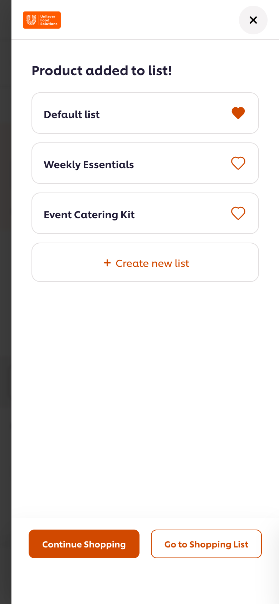
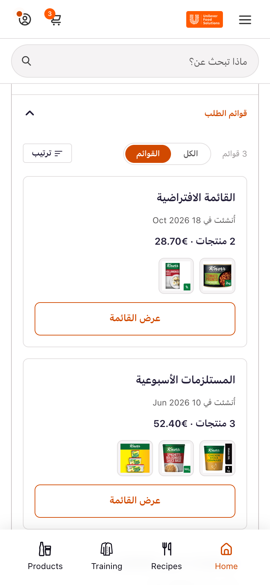
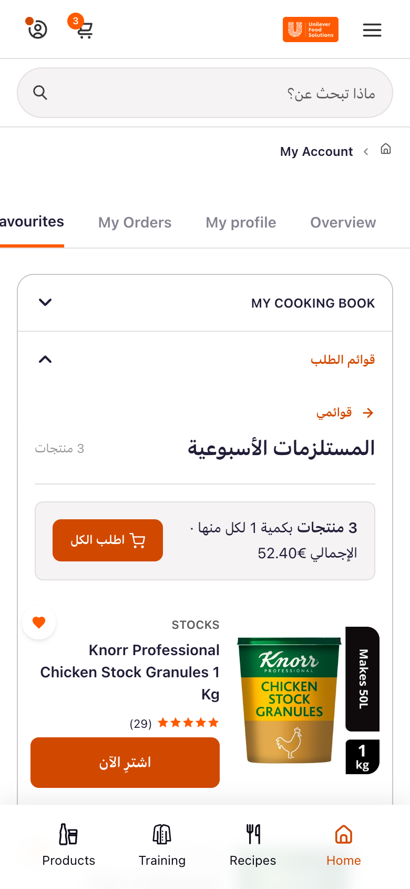
i18n & RTL
Every string follows the page language; list names are the chef's own text and product names stay as on the pack. Arabic below; the panel preview is the real markup in dir="rtl", Order Lists previews are the template switched to Arabic.
| English | Arabic |
|---|---|
| Product added to list! | تمت إضافة المنتج إلى القائمة! |
| Default list | القائمة الافتراضية |
| Create new list | إنشاء قائمة جديدة |
| List name | اسم القائمة |
| Create list (button label) | إنشاء القائمة |
| Cancel | إلغاء |
| You already have a list with this name | لديك بالفعل قائمة بهذا الاسم |
| Continue Shopping | متابعة التسوق |
| Go to Shopping List | الذهاب إلى قائمة التسوق |
| Added to {list} | تمت الإضافة إلى {list} |
| Removed from {list} | تمت الإزالة من {list} |
| Created {list} and added the product to it | تم إنشاء {list} وإضافة المنتج إليها |
| Removed from your lists | تمت الإزالة من قوائمك |
| Undo | تراجع |
| Add to favourites / Remove from favourites | إضافة إلى المفضلة / إزالة من المفضلة |
| Sign up or Log in to save products to your lists. | سجّل حسابًا أو سجّل الدخول لحفظ المنتجات في قوائمك. |
| Join over 1 million chefs already getting inspired. | انضم إلى أكثر من مليون طاهٍ يستلهمون أفكارهم بالفعل. |
| Tap the heart to save products — your lists will be waiting in your profile. | اضغط على القلب لحفظ المنتجات، وستجد قوائمك في ملفك الشخصي. |
| Order Lists | قوائم الطلب |
| All / Lists | الكل / القوائم |
| Sort · Most recent · A–Z | ترتيب · الأحدث · أ–ي |
| {n} products · {n} lists | {n} منتجات · {n} قوائم |
| Created on {date} | أُنشئت في {date} |
| View list | عرض القائمة |
| My lists | قوائمي |
| {n} products at qty 1 each · {total} total | {n} منتجات بكمية 1 لكل منها · الإجمالي {total} |
| Order all | اطلب الكل |
| Buy it now | اشترِ الآن |
| No products yet | لا توجد منتجات بعد |
| This list is empty | هذه القائمة فارغة |
| Products you save to {list} in the shop show up here. | تظهر هنا المنتجات التي تحفظها في {list} من المتجر. |
| No products in your lists yet | لا توجد منتجات في قوائمك بعد |
| Tap the heart on any product to save it to a list. | اضغط على القلب في أي منتج لحفظه في قائمة. |
| Browse products | تصفّح المنتجات |
| Remove {product} from {list} (heart label) | إزالة {product} من {list} |
| Rule | Detail |
|---|---|
| Money | Intl.NumberFormat(locale, { style: "currency", currency }). The prototype is fixed to "€12.80" (the webshop format). |
| Dates | "Created on 10 Jun 2026": use Intl.DateTimeFormat(locale, { day: "2-digit", month: "short", year: "numeric" }) |
| Plurals | "{n} products", "{n} lists": the locale's plural rules (Intl.PluralRules); Arabic has six forms. The prototype handles English one/other only. |
| Sort A–Z | localeCompare with the page locale |
| Mixed text | List names can be any script: render them with dir="auto" in production so a Latin name reads correctly inside an Arabic page |
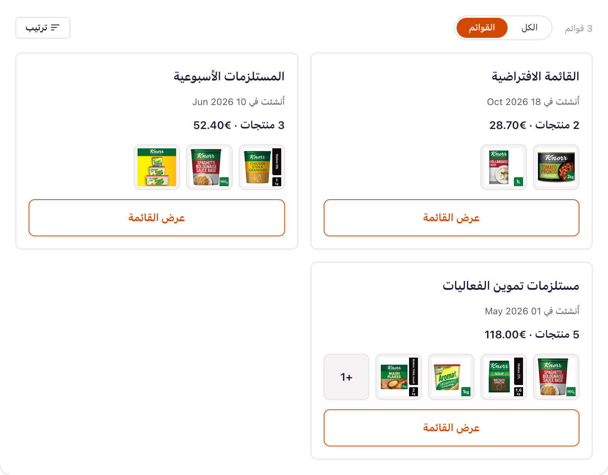
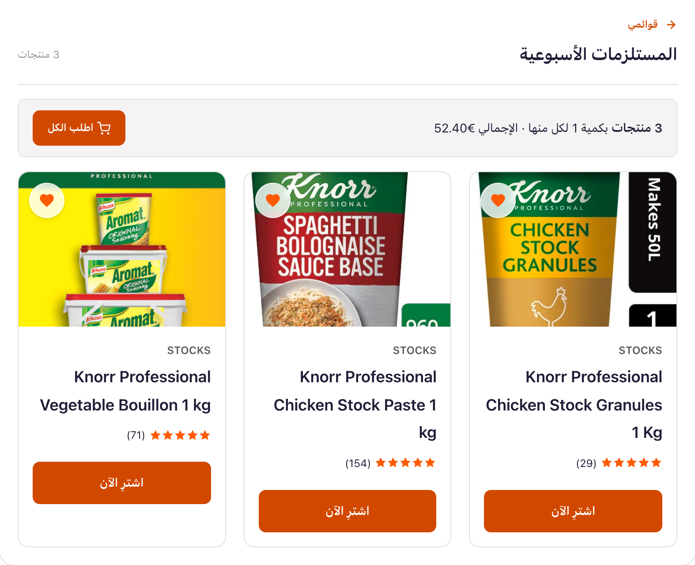
/* Panel: logical by construction (text-align: start, flex gaps); only the v1 drawer side flips */ [dir="rtl"] .signin-panel { right: auto; left: 0; transform: translateX(-100%); } /* Tile heart sits at the inline-start corner of the image (v1) */ [dir="rtl"] .ufs-tile__fav { right: auto; left: var(--space-3); } /* Order Lists: the "My lists" arrow points to the start side */ [dir="rtl"] .pg-fav-sublist-back-btn svg { transform: scaleX(-1); }